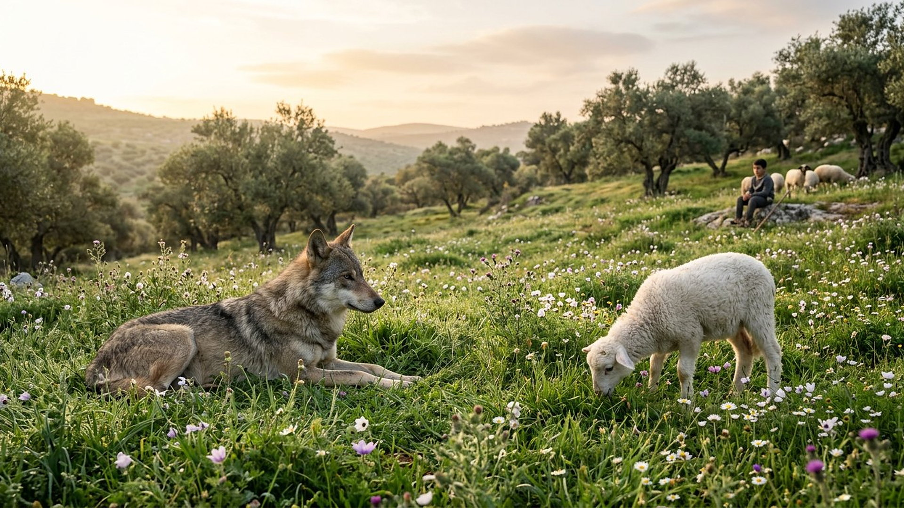
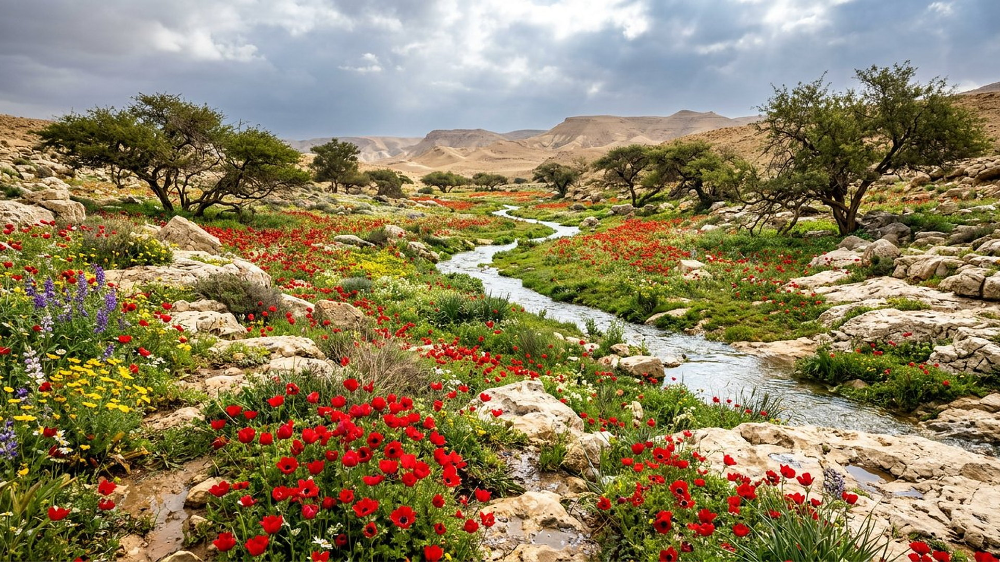
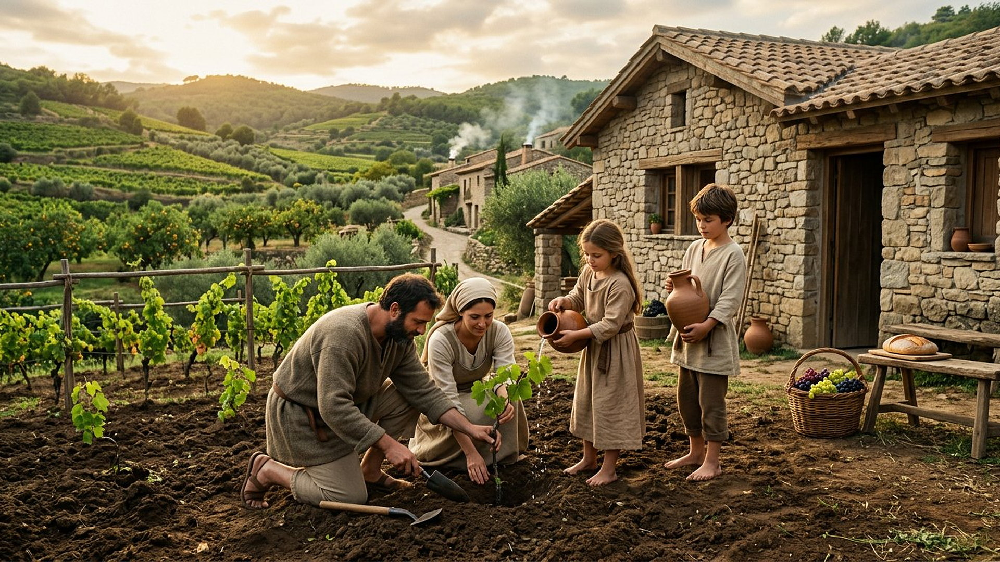

Salle 41 — Isaïe 11, 35 et 65 À VENIR
Le paradis terrestre restauré : la terre rendue à la vie
« Le loup habitera avec l’agneau, et la panthère se couchera avec le chevreau. » — Isaïe 11:6 (d’après Segond 1910)
Reconstitution numérique — la paix entre le prédateur et la proie : l’image maîtresse de la salle.
Une promesse qui se touche et se respire
Après les trônes et les jugements, la Bible finit… dans un jardin habité. Isaïe le décrit en trois tableaux que cette salle rapproche : le règne juste où « le loup habitera avec l’agneau » et où un petit enfant conduit les bêtes sans danger (Isaïe 11:6-9) ; le désert qui « fleurira comme le narcisse », avec des eaux jaillissant dans la solitude (Isaïe 35:1-7) ; et la terre renouvelée où l’on « bâtira des maisons et on les habitera, on plantera des vignes et on en mangera le fruit », sans plus travailler pour qu’un autre en profite (Isaïe 65:17-23).
Dans la lecture retenue par ce musée, ces tableaux décrivent les conditions terrestres du règne de mille ans (salle 32) puis de l’humanité rendue à la perfection : mort reculant, travail qui nourrit celui qui le fait, nature apaisée, générations qui se transmettent une terre soignée. Aucune date n’est avancée, et la salle ne prétend pas qu’un coin de désert actuel « prouve » l’accomplissement : les floraisons du désert levantin après la pluie sont une réalité saisonnière — elles donnent à l’image sa matière, pas sa démonstration.
Le récit en cinq temps
Avancez dans les trois tableaux d’Isaïe, d’une station à l’autre.

Le banc des preuves : les poèmes sont anciens
FAIT ARCHÉOLOGIQUE
Le Grand Rouleau d’Isaïe (EV-50)
Le Grand Rouleau d’Isaïe (1QIsaᵃ), copié au IIe siècle av. n. è. et conservé au Sanctuaire du Livre (Musée d’Israël, Jérusalem), contient le livre d’Isaïe presque entier — dont les chapitres 11, 35 et 65 lus dans cette salle. Les tableaux du paradis terrestre ne sont donc pas des ajouts tardifs : ils étaient déjà recopiés, dans cette forme, plus d’un siècle avant l’ère chrétienne.
LECTURE PROPHÉTIQUE
Pourquoi une terre, pas seulement un ciel ?
Parce que les images restent obstinément concrètes : des maisons que l’on habite, des vignes dont on mange le fruit, des enfants qui jouent, des vieillards qui achèvent leurs jours. Le musée les relie au « les hommes doux hériteront la terre » de Jésus (Matthieu 5:5) et à la résurrection terrestre de la salle 39 : le Royaume (salle 40) gouverne du ciel, et la terre redevient le jardin des humains.
DÉBATTU
Les autres lectures, honnêtement
Ces chapitres sont aussi lus comme des poèmes du retour d’exil (le désert fleuri = la route du retour de Babylone), comme des images de l’ère messianique centrées sur Israël, ou comme le langage symbolique d’un monde réconcilié sans géographie précise. Le musée signale ces lectures ; il retient, pour sa part, une restauration terrestre progressive sous le règne de mille ans — présentée comme lecture prophétique, jamais comme un fait mesuré.
Quatre clés pour bien lire les tableaux
1. La paix commence entre les humains
Le loup et l’agneau couronnent un texte qui commence par la justice : un rejeton qui « jugera les pauvres avec équité » (Isaïe 11:3-4). L’apaisement de la nature suit celui des sociétés ; il ne le remplace pas.
2. Le travail retrouve son sens
« Ils ne bâtiront pas pour qu’un autre habite, ils ne planteront pas pour qu’un autre mange » (Isaïe 65:22) : le paradis décrit n’est pas l’oisiveté, c’est la fin du travail volé — chacun jouit durablement de ce qu’il construit.
3. La mort recule avant de disparaître
« On n’entendra plus de pleurs » et le pécheur centenaire reste « maudit » (Isaïe 65:19-20) : même ces tableaux gardent la trace d’un processus, celui des mille ans (salles 32 et 39), avant l’abolition finale de la mort (salle 33).
4. Aucune date, aucun lieu à annexer
La salle ne désigne ni région du monde, ni programme politique, ni aménagement actuel comme « début d’accomplissement ». Le paradis annoncé est l’œuvre du Royaume, pas le produit d’un État ou d’une technique.
Prescience n’est pas fatalité — un jardin se cultive
Les tableaux montrent des humains qui plantent, bâtissent, élèvent des enfants : la terre restaurée n’écrase pas leur liberté, elle la rend à son échelle. La prescience promet le jardin ; elle laisse à ceux qui y vivront le choix quotidien d’en prendre soin.

Salle 32 : le règne de mille ans · Salle 39 : la résurrection · Salle 40 : le Royaume de Dieu
Écouter la salle
Transcription de la narration
Bienvenue dans cette salle du musée. Vous allez découvrir une prairie au matin où un loup se repose près d’un agneau, une vallée désertique couverte de fleurs après la pluie, puis une famille qui plante une jeune vigne devant sa maison. Bonne visite. La visite avance en cinq étapes courtes. Prenez le temps d’observer chaque image et de lire les panneaux : ils présentent trois poèmes très anciens et un grand rouleau de parchemin conservé à Jérusalem.